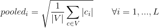
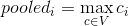
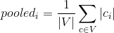
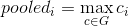
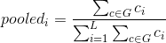

where V is the set of all code vectors at one scale, the ith entry of the pooled vector is the square root of average value of ith entries of all code vectors. This method will produce a 1 by L vector at each scale, ignoring the spatial grids.
where V is the set of all code vectors at one scale. This method will produce a 1 by L vector at each scale, ignoring the spatial grids.
where V is the set of all code vectors at one scale. This method will produce a 1 by L vector at each scale, ignoring the spatial grids.
where G is the set of all code vectors within one local grid. this method will produce a 1 by L vector for each local grid at each scale, maintaning spatial grids.
where G is the set of all code vectors within one local grid. this method will produce a 1 by L vector for each local grid at each scale, maintaning spatial grids.